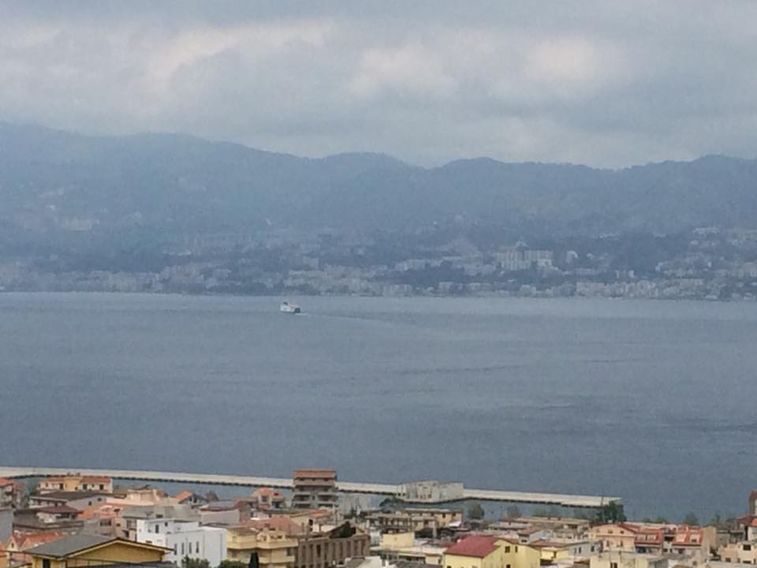
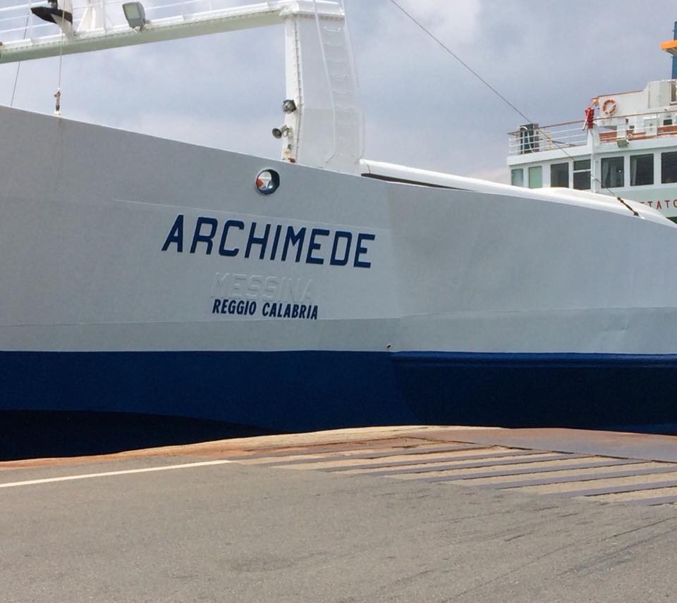
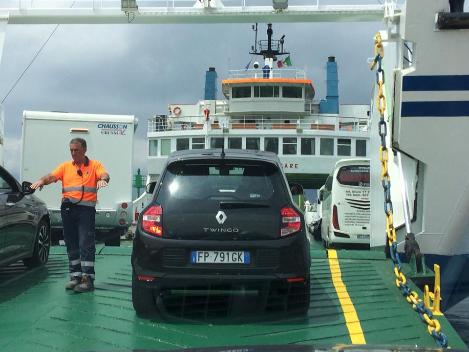
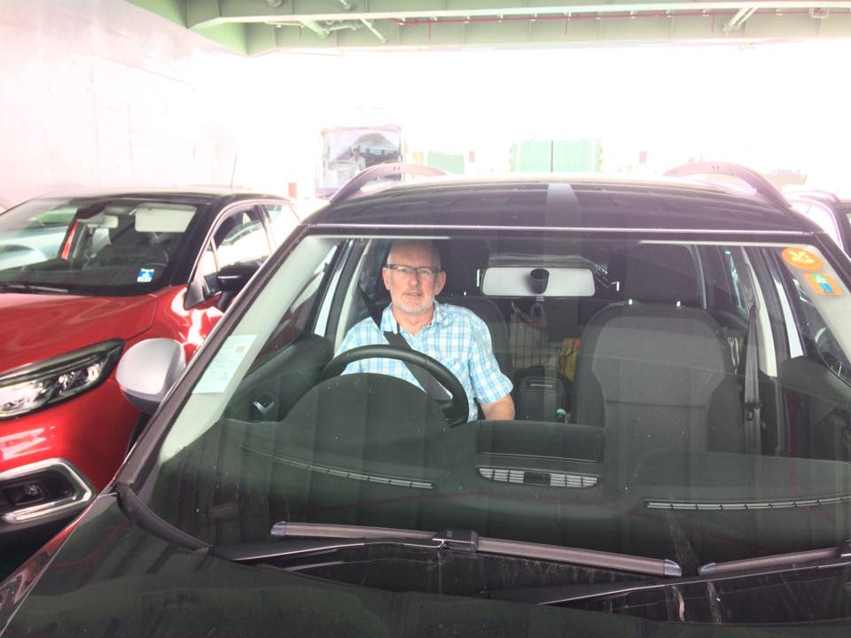
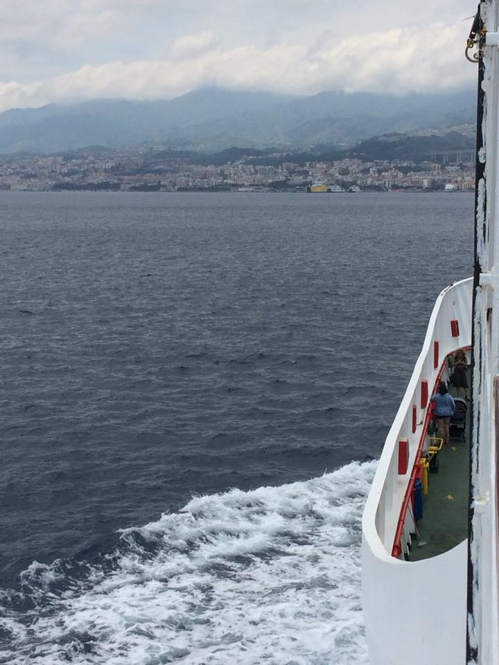
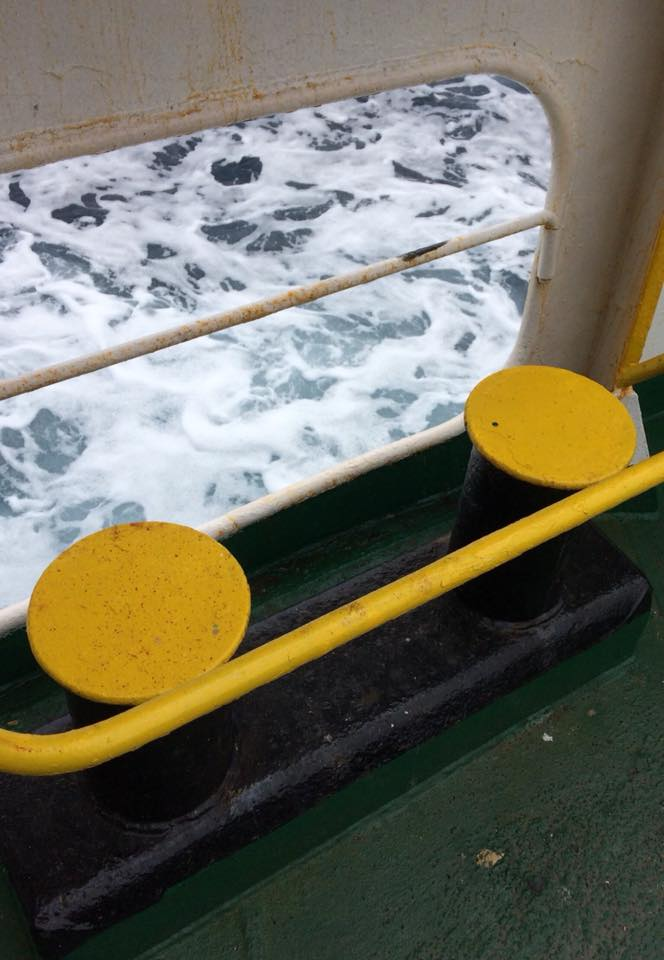
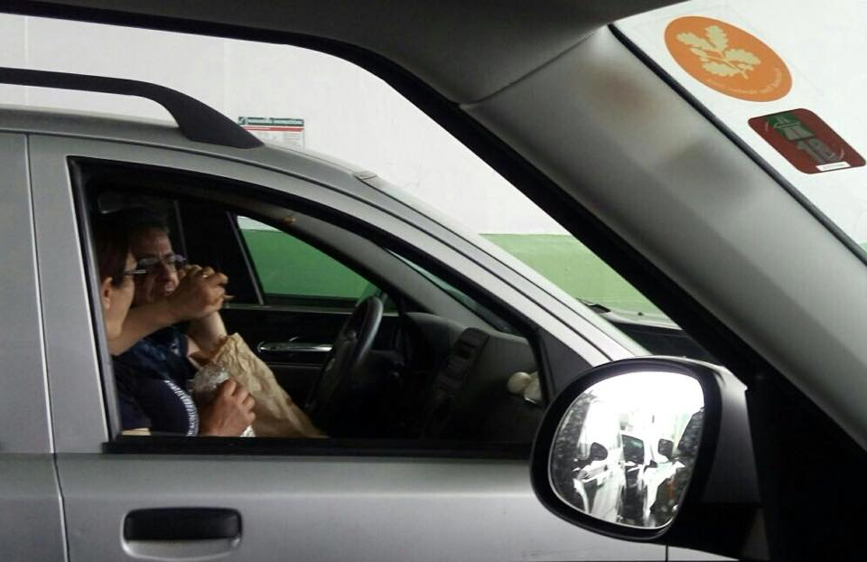
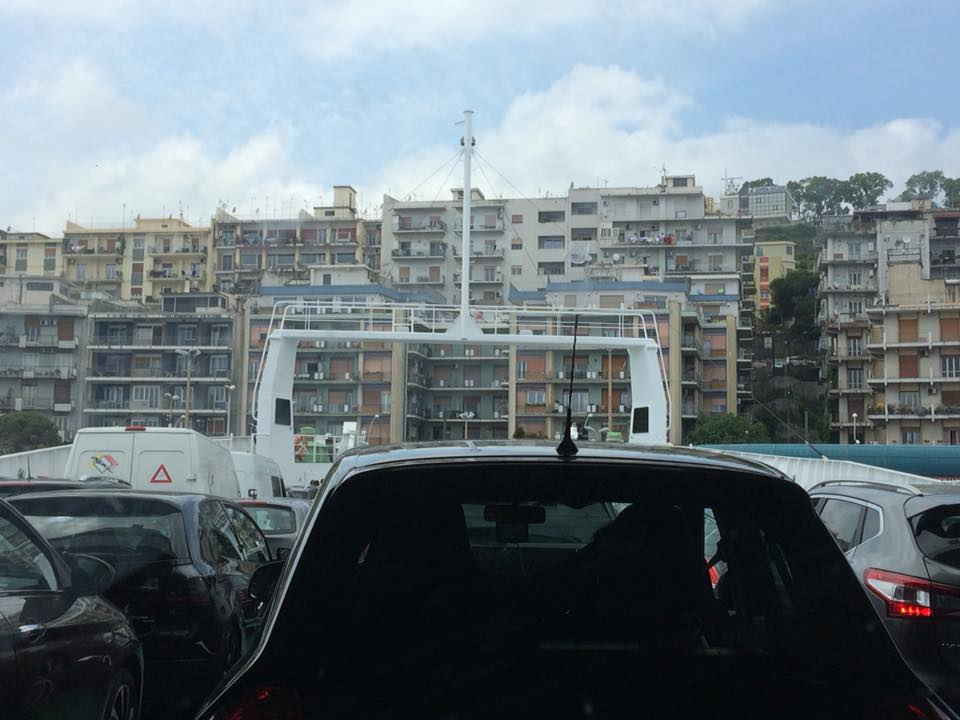
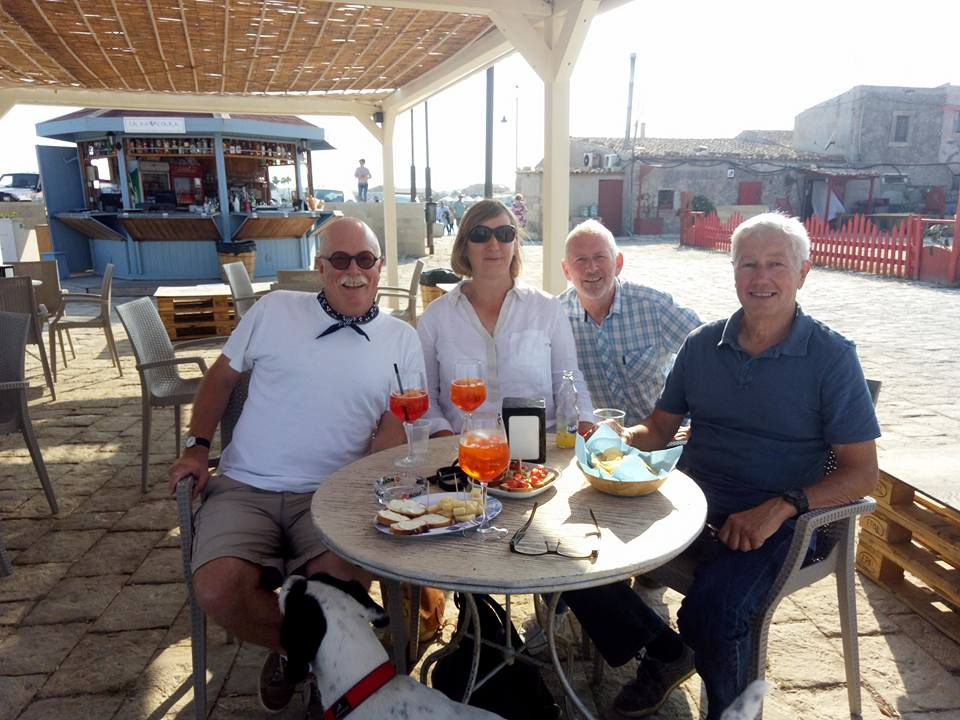
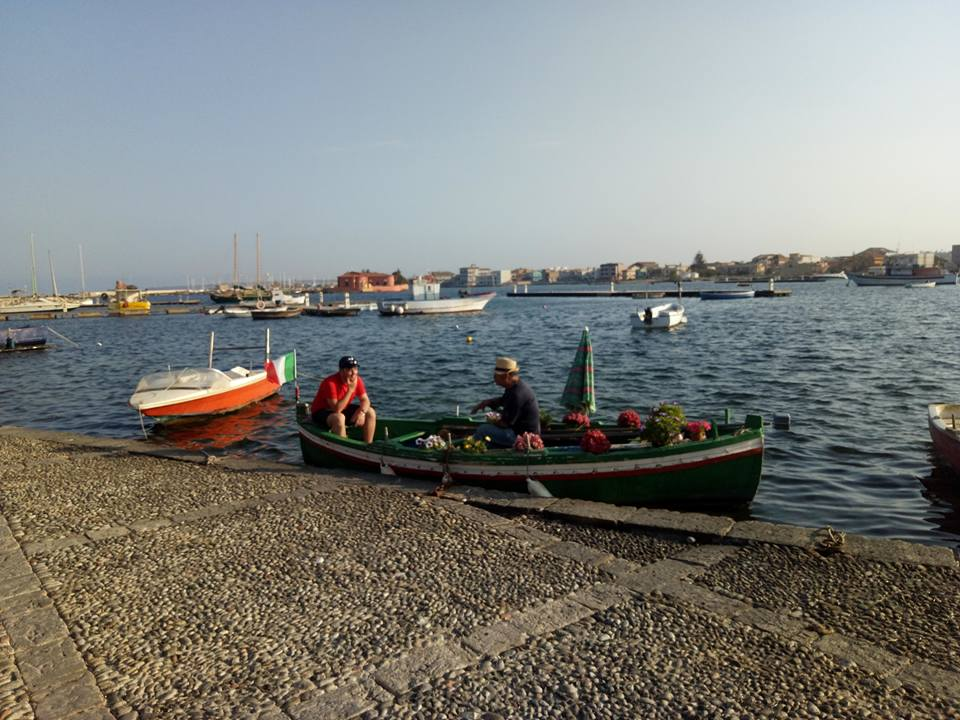

A great drive from Rende/Cosenza to Reggio Calabria through mountain tunnels and across towering bridges. If Gerry & The Pacemakers reissued their 1965 hit, think how international Ferry Cross The Straits of Messina would sound! A brisk 20 minute trip aboard Archimede from Villa S. Giovanni brought us over to Sicily (a couple in the next car arguing over their focaccia notwithstanding).
How pleased we are to have reached Sicily. Then a two hour drive to Marzamemi and now to be spending the next 6 days with Diane and Stephen. First stop an Apperitivo and sight of the mystery man with his flower boat.A









